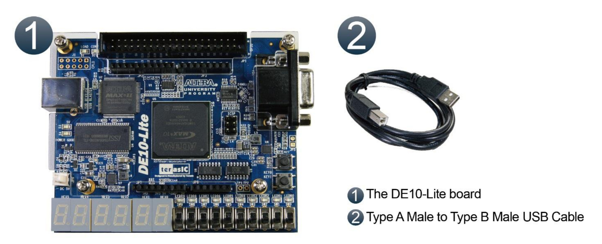
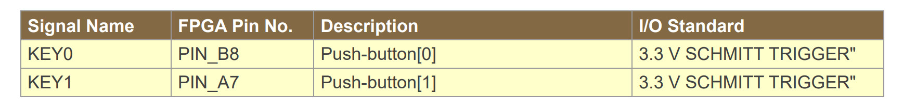
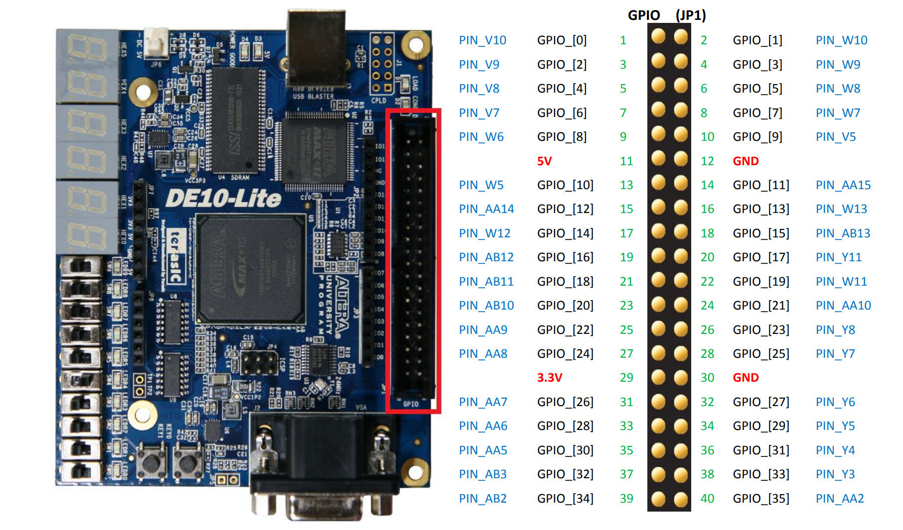
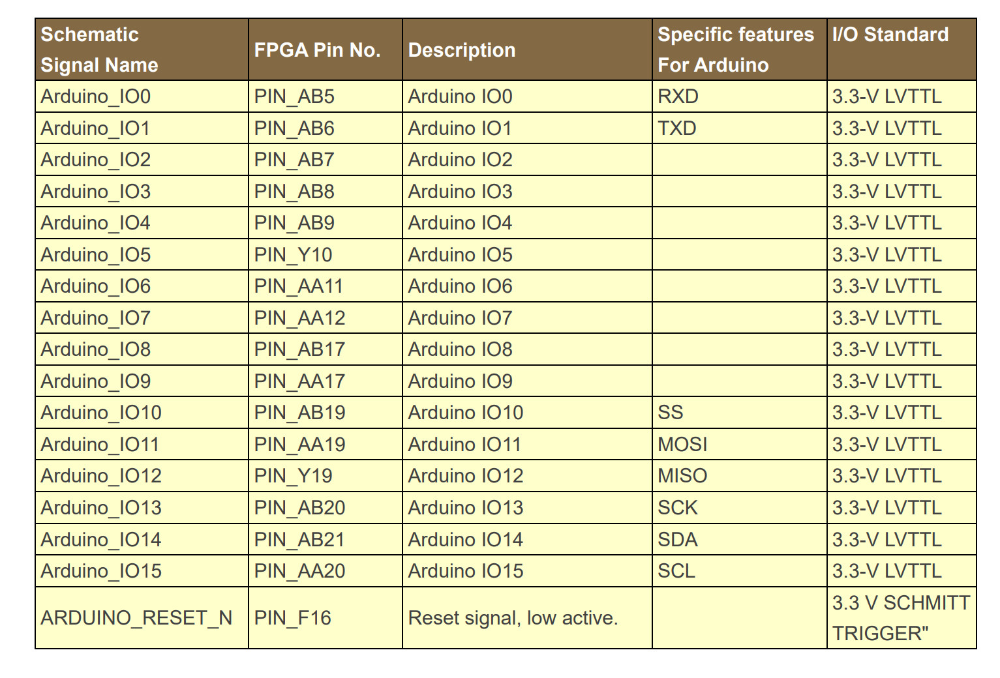
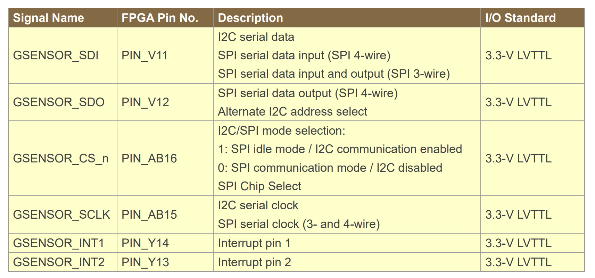

แนะนำการใช้งานบอร์ด Terasic DE10 Lite Development Kit#
Keywords: FPGA, Intel / Altera MAX 10, Terasic DE10 Lite FPGA Board
▷ Terasic DE10 Lite#
DE10-Lite เป็นบอร์ด FPGA ของบริษัท Terasic (Taiwan)
และมีชิปหลักคือ Intel / Altera MAX 10 FPGA (Device: 10M50DAF484C7G)
เริ่มจำหน่ายครั้งแรกในปีค.ศ. 2016
นอกจากบอร์ด DE10-Lite ยังมีบอร์ดในกลุ่มที่เรียกว่า DE-Series Intel FPGA Development Kits ของบริษัท Terasic ที่เป็นตัวเลือกอีกหลายบอร์ด เช่น
- DE0-CV: Cyclone V,
5CEBA4F23C7 - DE0-Nano: Cyclone IV-E,
EP4CE22F17C6 - DE0-Nano-SoC: Cyclone V SoC,
5CSEMA4U23C6 - DE1-SoC: Cyclone V SoC,
5CSEMA5F31C6 - DE2-115: Cyclone IV-E,
EP4CE115F29C7 - DE10-Standard: Cyclone V SoC,
5CSXFC6D6F31C6 - DE10-Nano: Cyclone V-SE,
5CSEBA6U2317
บอร์ด DE10-Lite มีขนาดไม่ใหญ่ ราคาประมาณ 5,000 บาท (ไม่รวม VAT) เชื่อมต่อกับคอมพิวเตอร์ผู้ใช้ด้วยสาย USB: Type-A Male to Type-B Male และใช้แรงดันไฟเลี้ยง +5Vdc จากพอร์ต USB สำหรับการทำงานของวงจร ดังนั้นจึงสะดวกต่อการใช้งาน

รูป: Terasic DE10 Lite Development Kit (Source: Intel)
(Source: Terasic)
รูป: มุมมองของบอร์ดจากด้านบนและด้านล่าง
ซอฟต์แวร์ที่ใช้ในการออกแบบวงจรด้วยชิป FPGA เรียกว่า FPGA Design Software และซอฟต์แวร์ที่ของบริษัท Intel / Altera มีชื่อว่า Quartus Prime (เวอร์ชันล่าสุดในขณะที่เขียนบทความนี้คือ v24.1) แบ่งเป็น 3 ตัวเลือก
- Quartus Prime Lite Edition (license-free): ใช้งานได้ฟรี และรองรับการใช้งานชิป
10M50DAF484C7Gดังนั้นจึงแนะนำให้ติดตั้งและใช้งานซอฟต์แวร์นี้ - Quartus Prime Standard Edition | Pro Edition: จะต้องเสียค่าลิขสิทธิ์ในการใช้งานซอฟต์แวร์
▷ องค์ประกอบที่สำคัญของบอร์ด DE10-Lite#
ข้อมูลต่อไปนี้อ้างอิงจากเอกสาร DE10-Lite User Manual และไฟล์ Schematic (Rev.E0) แนะนำให้ดาวน์โหลดไฟล์ DE10-Lite_v.2.1.0_SystemCD.zip (2020-06-05) จากเว็บไซต์ของบริษัท
- FPGA Device: 10M50DAF484C7G
- Logic Elements (LEs): 50K
- M9K Memory: 1,638 Kbits
- Embedded User Flash Memory: 5,888 Kbits
- 18 × 18 Multipliers: 144
- PLLs: 4
- Onboard USB Blaster
- SDRAM (Synchronous Dynamic RAM): 64MB, 16-bit data wide, 3.3V LVTTL
- Power Supply: +5Vdc
- 2-pin header (5V & GND pins)
- USB Port
- 2x20-pin GPIO Headers
- 1x Arduino Uno R3 Connector
- Digital GPIO Pins: 3.3V logic (not 5V !!!)
- 6x Analog Inputs: 0V ~ 3.3V
- 6-Digit 7-Segment Display (3.3 LVTTL)
- 10x LEDs (3.3 LVTTL)
- 10x Slide Switches (3.3 LVTTL)
- VGA Connector (D-sub Connector): 4-bit resistor-network DAC for RGB
- 2x User Push Buttons (Active-low): KEY0 (
PIN_B8) & KEY1 (PIN_A7) - 3-axis Accelerometer (G-Sensor): ADXL345 (I2C & SPI mode)
- 4-Output Clock Signal Generator: 4 Outputs (3.3V LVTTL)
- Y1: 24MHz for USB Blaster
- Y3: ADC CLK 10MHz (FPGA Pin:
PIN_N5) - Y4: MAX10 CLK1 50MHz (FPGA Pin:
PIN_P11) - Y5: MAX10 CLK2 50MHz (FPGA Pin:
PIN_N14)
- 4x Status LEDs:
- D1:
ULED(USB Blaster Status) - D2:
CONF_DONE(FPGA Configuration Status) - D3: Not Used
- D4: System Power Status
- D1:
รูป: บล็อกไดอะแกรมแสดงองค์ประกอบของบอร์ด DE10 Lite
บริษัท Terasic ได้พัฒนาตัวอย่างการออกแบบวงจรดิจิทัลเป็นระบบคอมพิวเตอร์ผังตัวที่มีซีพียู NIOS II เป็นตัวประมวลผล (เป็น Soft-IP CPU Core ขนาด 32 บิต) เพื่อสาธิตการใช้งานบอร์ด DE10 Lite วงจรดิจิทัลนี้สามารถเชื่อมต่อกับคอมพิวเตอร์ผู้ใช้ด้วยวิธี USB-JTAG หากผู้ใช้จะลองใช้งาน ก็จะต้องดาวน์โหลดไฟล์และติดตั้งซอฟต์แวร์ที่มีชื่อว่า DE10 Lite Control Panel
รูป: วงจรตัวอย่างสาธิตการใช้งาน NIOS II 32-bit Soft-CPU สำหรับบอร์ด DE10 Lite
บอร์ด FPGA มีวงจรที่ทำหน้าที่แปลงแรงดันไฟฟ้าจากระดับ +5V (VCC5) และต้องไม่เกิน 5.5V
ให้เป็นแรงดันไฟฟ้าระดับต่ำลงมาสำหรับการทำงานของวงจรต่าง ๆ ของบอร์ด ได้แก่
- +3.3V (
VCC3P3) - +2.5V (
VCC2P5) - +1.8V (
VCC1P8) - +1.2V (
VCC1P2)
ในส่วน I/O Banks ของชิป FPGA บนบอร์ด DE10-Lite มีการเลือกใช้ระดับแรงดันไฟฟ้าที่แตกต่างกันสำหรับ VCCIO (+3.3V หรือ +2.5V) และมีตัวอย่างบางส่วนดังนี้

รูป: ผังวงจรแสดงตัวอย่างการเลือกใช้แรงดันไฟฟ้า VCCIO สำหรับ I/O Banks
รูป: ตารางเปรียบเทียบตัวเลือกสำหรับ (Singled-ended) I/O Standards ของชิป MAX 10
รูป: ตัวเลือก Schmitt-Trigger Input สำหรับ LVCMOS / LVTTL I/Os
▷ ฮาร์ดแวร์และซอฟต์แวร์สำหรับการอัปโหลดไฟล์ FPGA Bitstream#
ไฟล์ข้อมูลที่เรียกว่า "บิตสตรีม" (Bitstream) เช่น ไฟล์ .sof และ .pof
ซึ่งได้จากการทำงานของซอฟต์แวร์ Quartus เมื่อมีการแปลงวงจรดิจิทัลที่ได้ออกแบบไว้และได้ไฟล์บิตสตรีมแล้ว
จะต้องใช้อุปกรณ์ที่เรียกว่า USB Blaster ซึ่งมีอยู่บนบอร์ด DE10 Lite แล้ว
ร่วมกับซอฟต์แวร์ที่ใช้คือ Quartus Programmer เพื่อโปรแกรมชิป FPGA ด้วยไฟล์ดังกล่าว
รูป: การโปรแกรมชิป FPGA ด้วยวงจร JTAG ที่มีอยู่บนบอร์ด FPGA
วงจร USB Blaster ประกอบด้วยไอซี FTDI FT245BL ทำงานในโหมด 8-bit FIFO และชิป Altera MAX II CPLD (EPM240T100) วงจรทำหน้าที่เชื่อมต่อด้านหนึ่งกับพอร์ต USB ของคอมพิวเตอร์ผู้ใช้ และอีกด้านเชื่อมต่อกับพอร์ต JTAG ของชิป FPGA ด้วยสัญญาณ TCK, TMS, TDI และ TDO (ใช้แรงดันไฟเลี้ยง +2.5V สำหรับลอจิก)
วงจร USB Blaster ใช้สำหรับการอัปโหลด "บิตสตรีม" ผ่าน JTAG แบ่งเป็น 2 กรณี คือ
- เขียนข้อมูลไปยังหน่วยความจำ SRAM-based (Non-volatile) Configuration Memory (CRAM) ภายในชิป MAX 10 แต่เมื่อปิดไฟเลี้ยงของบอร์ด ข้อมูลจะหายไป โดยปรกติ ก็เลือกใช้วิธีนี้ในช่วงการออกแบบวงจรดิจิทัลและทดลองกับบอร์ด FPGA
- เขียนข้อมูลไปยังหน่วยความจำที่เรียกว่า CFM (Configuration Flash Memory): ภายในชิป MAX 10 มีหน่วยความจำแฟลช (On-chip Flash Memory) ร่วมไว้ให้แล้ว (ไม่ต้องใช้ไอซี Serial Flash Memory ภายนอก) ส่วนหนึ่งของหน่วยความจำประเภทนี้ ใช้เป็น CFM เพื่อเก็บข้อมูลของบิตสตรีม และส่วนที่เหลือใช้สำหรับ User Data Flash
รูป: การเขียนข้อมูลลงในหน่วยความจำ CRAM หรือ CFM
▷ การใช้งานขา I/O ของชิป FPGA บนบอร์ด DE10 Lite#
ชิป MAX 10 FPGA (10M50DAF484C7G) มีขา I/O จำนวนมาก
และส่วนหนึ่งจะใช้สำหรับการเชื่อมต่อกับวงจรต่าง ๆ บนบอร์ด
ดังนั้นจะต้องกำหนดหมายเลขขา I/O ให้ถูกต้องสำหรับสัญญาณอินพุตและเอาต์พุตของวงจรดิจิทัล
(เรียกขั้นตอนนี้ว่า FPGA Pin Assignment) โดยทำได้ 2 วิธี คือ
- ใช้เครื่องมือซอฟต์แวร์ที่เรียกว่า Pin Planner ซึ่งเป็นส่วนหนึ่งของโปรแกรม ** Quartus Prime **
- ใช้ไฟล์ Tcl Script (ตัวอย่างไฟล์
set_pins.tcl) เพื่อตั้งค่าการใช้งานขา I/O
วงจรบนบอร์ด DE10-Lite สำหรับการใช้งานระดับพื้นฐาน ได้แก่
- วงจรสร้างสัญญาณอินพุตสำหรับ Clock ของระบบ (สำหรับการออกแบบวงจรดิจิทัลแบบ Synchronous Design)
- วงจรปุ่มกด (Push Buttons) และสวิตช์เลื่อนสองทาง ใช้เป็นอินพุตแบบดิจิทัล
- วงจร LEDs ใช้เป็นเอาต์พุตแบบดิจิทัล
- วงจร 7-Segment Display ใช้เป็นเอาต์พุตแบบดิจิทัล
รูป: ขาสัญญาณ Clock มี 3 ตัวเลือก
รูป: ผังวงจรสำหรับไอซีที่ใช้ในการสร้างสัญญาณ Clock
รูป: ผังวงจรสำหรับ LEDs (LED แต่ละตัว มีตัวต้านทาน 1k โอห์ม ต่ออนุกรมอยู่)
บอร์ด DE10 Lite มีวงจร LEDs (active-high) จำนวน 10 ตำแหน่ง เป็นเอาต์พุตแบบดิจิทัล (3.3V LVTTL) สำหรับการแสดงสถานะลอจิก และมีการใช้งาน FPGA Pins ดังนี้
รูป: ตารางแสดงการใช้ขา I/O สำหรับ LEDs
บอร์ด DE10 Lite มีปุ่มกด 2 ปุ่ม ทำงานแบบ Active-Low และมีวงจรสวิตช์แบบเลื่อนสองทาง (Slide Switches) จำนวน 10 ตำแหน่ง เป็นอินพุตแบบดิจิทัล (3.3V LVTTL) และมีการใช้งาน FPGA Pins ดังนี้
รูป: ผังวงจรสำหรับปุ่มกด
รูป: การใช้ไอซี 74AUC17 Hex Schmitt-Trigger Buffer สำหรับสัญญาณจากปุ่มกด เพื่อช่วยลดปัญหาจากการกระเด้งของปุ่มกด (Switch Debouncing Circuit)

รูป: ตารางแสดงหมายเลขขาสำหรับวงจรปุ่มกด
รูป: ผังวงจรสำหรับวงจรสวิตช์เลื่อนสองทาง (มีตัวต้านทาน 120 โอห์มต่ออนุกรมอยู่)
รูป: ตารางแสดงหมายเลขขาสำหรับวงจรสวิตช์เลื่อนสองทาง
รูป: ผังวงจรสำหรับ 7-Segment Display
รูป: ตารางแสดงหมายเลขขาสำหรับ 7-Segment Display ทั้งหมด 6 หลัก (มีตัวต้านทาน 2k โอห์ม ต่ออนุกรมอยู่)
ในกรณีที่ต้องการต่อวงจรภายนอกใช้งานเพิ่มเติมจากวงจรที่มีบนบอร์ด จะต้องใช้ขาของคอนเนกเตอร์ต่อไปนี้
- คอนเนกเตอร์ 2x20 Pins (Male Pin Headers)
- คอนเนกเตอร์ตามรูปแบบของ Arduino Shield

รูป: แผนผังแสดงตำแหน่งขา I/O ของคอนเนกเตอร์แบบ 2x20-Pins
รูป: ตารางแสดงหมายเลขขา FPGA Pins และชื่อสัญญาณของคอนเนกเตอร์ GPIOs

รูป: ตารางแสดงหมายเลขขา FPGA Pins และชื่อสัญญาณของคอนเนกเตอร์ Arduino Shield
รูป: แผนผังแสดงตำแหน่งขาสำหรับ Arduino Shield Connector บนบอร์ด DE10 Lite
รูป: ตารางแสดงหมายเลขขาสำหรับ Arduino Shield
คำเตือน: บอร์ด DE10 Lite ไม่สามารถนำไปต่อใช้งานกับวงจรอื่นที่ทำงานด้วยแรงดันไฟเลี้ยงสูงกว่า 3.3V เช่น การรับสัญญาณอินพุตลอจิกที่ระดับ 5V จากวงจรอื่น เพราะจะทำให้วงจรภายในชิป FPGA เสียหายได้
วงจรบนบอร์ด DE10 Lite สำหรับการฝึกออกแบบวงจรที่มีความซับซ้อน ได้แก่
- ไอซีวัดความเร่งแบบสามแกน (3-axis Accelerometer: ADXL345)
- วงจรตัวต้านทานสำหรับ DAC (Digital-to-Analog Converter) ขนาด 4 บิต ต่อหนึ่งสีของ RGB เพื่อนำไปใช้กับสัญญาณ VGA
- ไอซีหน่วยความจำแบบ SDRAM ซึ่งใช้ขาสัญญาณ I/O ค่อนข้างมาก
รูป: ผังวงจรสำหรับ ADXL345 รองรับทั้ง I2C / SPI Bus

รูป: ตารางแสดงหมายเลขขาสำหรับ ADXL345
รูป: วงจรสำหรับการสร้างสัญญาณเอาต์พุต VGA
รูป: ผังวงจรสำหรับการสร้างสัญญาณเอาต์พุต VGA
รูป: ตารางแสดงหมายเลขขาสำหรับ VGA Output
รูป: การเชื่อมต่อระหว่างไอซี SDRAM กับชิป MAX 10 FPGA
รูป: ตารางแสดงหมายเลขขาสำหรับ SDRAM
ข้อสังเกต
- ชิป MAX 10 FPGA มีวงจร 12-bit SAR ADC (Analog-to-Digital Converter) อยู่ภายใน
และรับสัญญาณอินพุต-แอนะล็อก (อยู่ในช่วง 0V ~ 5V) ที่ขา
ADC_IN0~ADC_IN5ของคอนเนกเตอร์สำหรับ Arduino Shield - สัญญาณแอนะล็อก-อินพุต จะถูกนำไปใช้กับวงจรแแบ่งแรงดัน (Voltage Divider)
วงจรกรองความถี่แบบพาสซีฟ (Low-Pass Passive RC Filter)
และไอซีออปแอมป์ (OpAmp) ที่ทำหน้าที่เป็น Voltage Buffer
ดังนั้นสัญญาณอินพุตจะถูกลดระดับแรงดันไฟฟ้าให้อยู่ในช่วง 0V ~ 2.5V ก่อนนำไปใช้กับวงจร ADC1 ภายในชิป FPGA
แต่ขา
ADC_IN6และADC_IN7ของ ADC1 นั้นไม่ได้ต่อใช้งาน
รูป: ตัวอย่างผังวงจร OpAmp Buffer (ใช้ไอซี MCP6244 และแรงดันไฟเลี้ยง +3.3V) สำหรับสัญญาณอินพุต-แอนะล็อก 1 ช่องสัญญาณ
▷ กล่าวสรุป#
บทความนี้ได้นำเสนอข้อมูลเบื้องต้นเกี่ยวกับฮาร์ดแวร์ของบอร์ด Terasic DE10 Lite ซึ่งมีชิป Intel / Altera MAX 10 FPGA ซึ่งต้องใช้งานร่วมกับซอฟต์แวร์ Intel Quartus Prime Lite Edition ผู้ใช้ควรศึกษาวงจรและการทำงานของบอร์ด FPGA ให้เข้าใจก่อน โดยเฉพาะอย่างยิ่ง เมื่อจำเป็นต้องต่อวงจรภายนอกเพิ่มเพื่อใช้งานกับบอร์ด FPGA
This work is licensed under a Creative Commons Attribution-ShareAlike 4.0 International License.
Created: 2024-10-20 | Last Updated: 2024-10-26